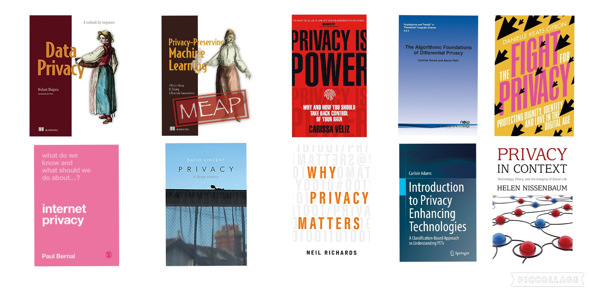
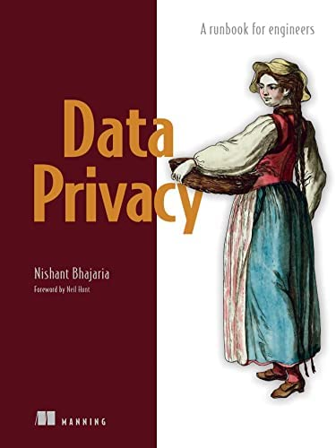
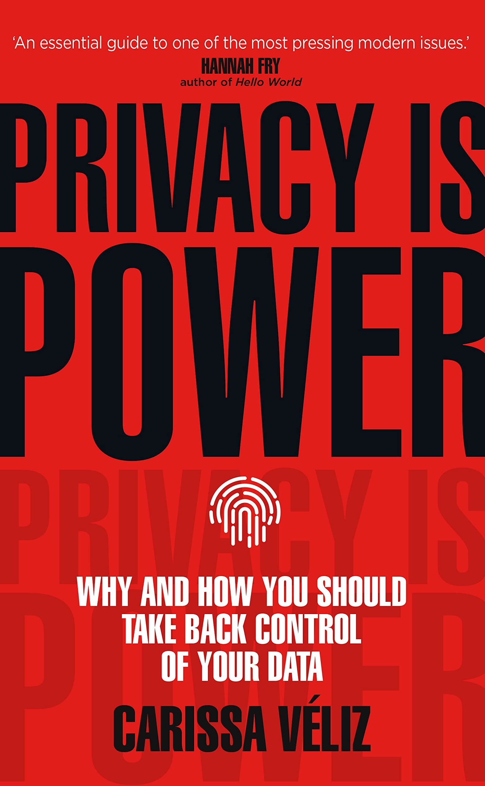
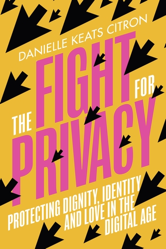
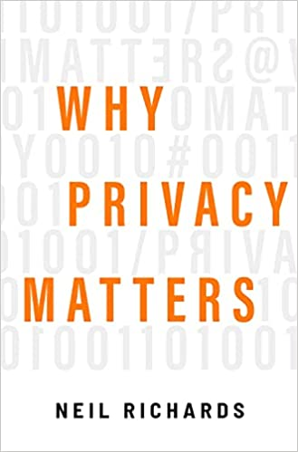
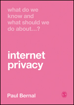
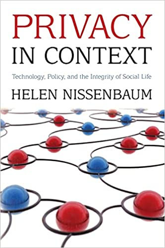
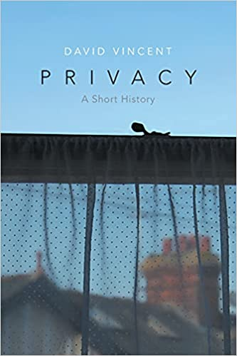
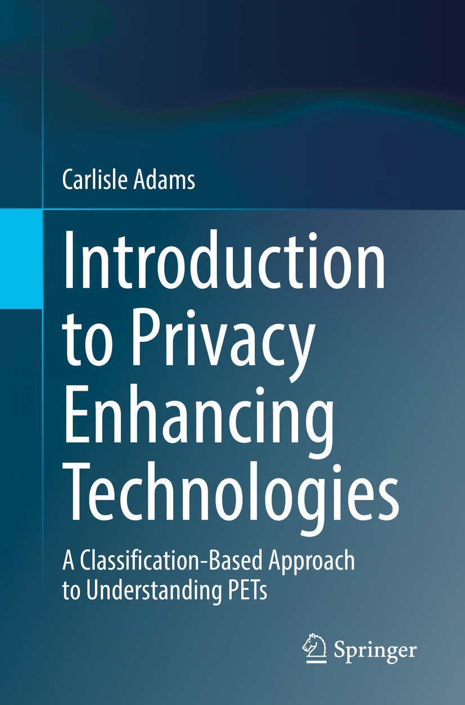
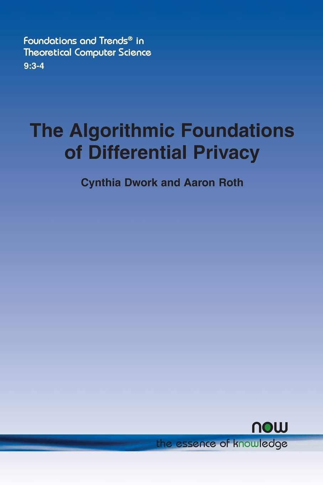

If you’re like most people, you probably think that your data is pretty safe. After all, it’s not like you’re doing anything illegal or shady – so what do you have to worry about? Unfortunately, the truth is that our data is far from safe.

That’s why I believe that everyone should educate themselves on the concept of privacy and privacy-enhancing technologies.
I think that these books are very useful to understand the concept of privacy and the privacy enhancing technologies like Differential Privacy, Homomorphic Encryption Secure, Federate Learning.

1. Privacy-Preserving Machine Learning
Is a comprehensive guide to avoiding data breaches in your machine learning projects. You’ll get to grips with modern privacy-enhancing techniques such as differential privacy, compressive privacy, and synthetic data generation
Link: https://www.manning.com/books/privacy-preserving-machine-learning
Autor: J. Morris Chang, Di Zhuang, and G. Dumindu Samaraweera
2. Data Privacy, A runbook for engineers
Data Privacy teaches you to design, develop, and measure the effectiveness of privacy programs. You’ll learn from author Nishant Bhajaria, an industry-renowned expert who has overseen privacy at Google, Netflix, and Uber
Link: https://www.manning.com/books/data-privacy
Autor: Nishant Bhajaria
3. Privacy is Power: Why and How You Should Take Back Control of Your Data
Short, terrifying, practical: Privacy is Power highlights the implications of our laid-back attitude to data and sets out how we can take back control.
Link: http://bitly.ws/vQQi
Autor: Carissa Véliz
4. The Fight for Privacy: Protecting Dignity, Identity, and Love in the Digital Age
Yet there is a solution to our toxic relationship with technology and privacy: fighting for intimate privacy as a civil right.
Link: https://www.amazon.com/Fight-Privacy-Protecting-Dignity-Identity/dp/0393882314
Autor: Danielle Keats Citron

5. Why Privacy Matters
Privacy matters because good privacy rules can promote the essential human values of identity, power, freedom, and trust. If we want to preserve our commitments to these precious yet fragile values, we will need privacy rules
Link: http://bitly.ws/vQQ9
Autor: Neil Richards
6. What Do We Know and What Should We Do About Internet Privacy?
The author then proposes what we should do about the problems surrounding internet privacy, such as significant changes in government policy, a reversal of the current ‘war’ on encryption, being brave enough to take on the internet giants, and challenging the idea that ‘real names’ would improve the discourse on social networks.
Link: http://bitly.ws/vQPZ
Autor: Paul Bernal
7. Privacy in Context: Technology, Policy, and the Integrity of Social Life
This book claims that what people really care about when they complain and protest that privacy has been violated is not the act of sharing information itself―most people understand that this is crucial to social life ―but the inappropriate, improper sharing of information.
Link: http://bitly.ws/vQPL
Autor: Helen Nissenbaum
8. Privacy: A Short History
Privacy: A Short History provides a vital historical account of an increasingly stressed sphere of human interaction. At a time when the death of privacy is widely proclaimed, distinguished historian, David Vincent, describes the evolution of the concept and practice of privacy from the Middle Ages to the present controversy over digital communication and state surveillance provoked by the revelations of Edward Snowden.
Link: http://bitly.ws/vQPC
Autor: David Vincent
9. Introduction to Privacy Enhancing Technologies
This textbook provides a unique lens through which the myriad of existing Privacy Enhancing Technologies (PETs) can be easily comprehended and appreciated. It answers key privacy-centered questions with clear and detailed explanations.
Link: https://link.springer.com/book/10.1007/978-3-030-81043-6
Autor: Carlisle Adams
10. The Algorithmic Foundations of Differential Privacy
After motivating and discussing the meaning of differential privacy, the preponderance of this monograph is devoted to fundamental techniques for achieving differential privacy, and application of these techniques in creative combinations, using the query-release problem as an ongoing example
Link: http://bitly.ws/vQPb
Autor: Cynthia Dwork and Aaron Roth